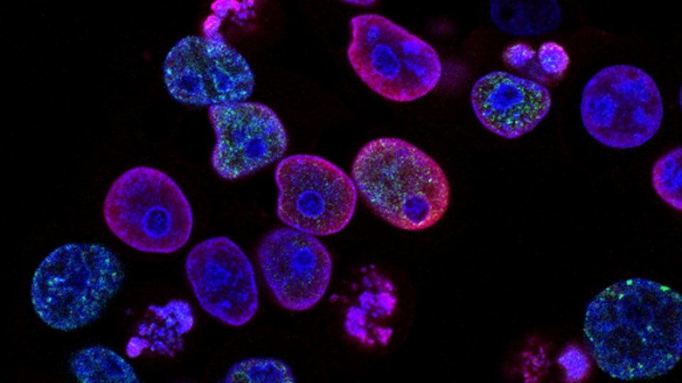

Doanh nghiệp sản xuất và chế biến tại Cần Thơ ngày càng cần minh chứng chất lượng rõ ràng cho công bố, siêu thị và xuất khẩu. Apoliq đồng hành bằng dịch vụ thử nghiệm theo ISO/IEC 17025 và tư vấn hồ sơ sát thực tế nhà máy.
Vì sao DN Cần Thơ cần kiểm soát chất lượng bài bản?
Chuỗi phân phối và đối tác OEM yêu cầu phiếu kết quả, truy xuất lô và lịch QC định kỳ. Thiếu kế hoạch kiểm nghiệm, doanh nghiệp dễ chậm công bố hoặc phát hiện lỗi muộn khi hàng đã vào kho.
Apoliq hỗ trợ những hạng mục nào?
- Kiểm nghiệm thực phẩm, nông sản và các mẫu liên quan hồ sơ chất lượng.
- Tư vấn chỉ tiêu theo mục đích: công bố, QC nội bộ, đối soát đối tác.
- Định hướng chứng nhận (VietGAP, hệ thống ATTP…) khi DN sẵn sàng nâng cấp.
- Nhận mẫu và phản hồi báo giá nhanh qua hotline Cần Thơ.
Gợi ý triển khai cho nhà máy / xưởng
- Chốt TCCS và danh mục chỉ tiêu theo sản phẩm chủ lực.
- Lên lịch gửi mẫu pilot trước khi chạy lô lớn.
- Lưu phiếu kết quả theo lô để đối soát khi có khiếu nại.
- Rà soát định kỳ khi đổi công thức hoặc nhà cung cấp nguyên liệu.
Liên hệ Apoliq
Trụ sở Cần Thơ — hotline 0917 333 965 · Email info@apoliq.com. Xem Liên hệ và các dịch vụ trên trang dịch vụ.
Cần tư vấn kiểm soát chất lượng tại Cần Thơ? Apoliq — đồng hành DN bằng thử nghiệm và hồ sơ rõ ràng.